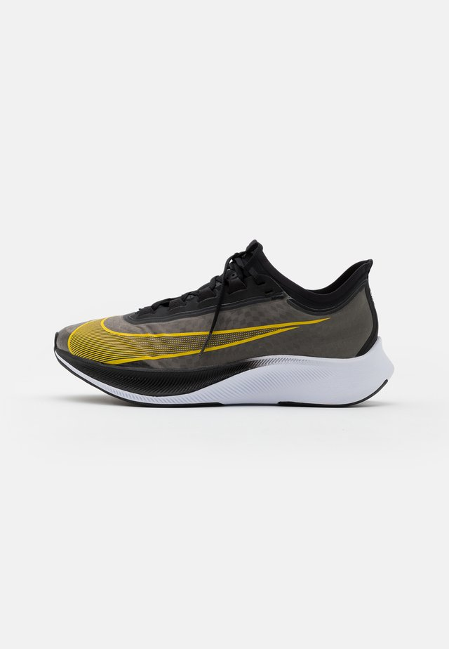
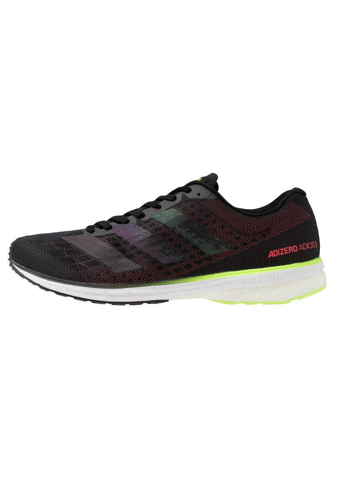

Nike flyknit
Nike ZoomX Vaporfly NEXT% tar dig till rekordfart med en lättare design och snabbare känsla än tidigare. Mer dämpning under foten och lättare ovandel ger en bekväm sko med suverän energiåtergivning.
Anna, 37 år som driver flera träningsanläggningar ger skorna 4/5 i betyg.
"Lätt en av de bästa skorna jag har tränat med"

Nikefly Air Zoom Vomero 14
BANBRYTANDE RESPONS.
Nike Air Zoom Vomero 14 Running Shoe för män tar responsiv dämpning till helt nya höjder. Hellång Zoom Air-enhet samverkar med Nike React-dämpning för att ge en superpigg, smidig löpning. På toppen är den snygga designen tekniskt framtagen för att ge support till din löpning.
Anna, 37 år som driver flera träningsanläggningar ger skorna 5/5 i betyg.
"Lätt en av de bästa skorna jag har tränat med"

Adidas adios
Adizero Adios 4 Skor
Ultralätta löparskor för långdistanslöpning och träning.
Japanska skomakaren Omori designade dessa neutrala skor att bäras av världens främsta maratonlöpare. De har en fixerande passform för löping och snabb träning. Responsiv dämpning ger tillbaka energi till varje steg. Den superlätta och ventilerande ovandelen i mesh ger stöd med en knappt märkbar känsla.
Anna, 37 år som driver flera träningsanläggningar ger skorna 5/5 i betyg.
"Lätt en av de bästa skorna jag har tränat med"